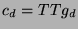
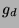
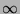

Next: E: Voltage Controlled Voltage
Up: Circuit description
Previous: Trans-capacitor
Contents
Subsections
Dxxxxxxx n+ n- mname {area} {args}
.DIOde xxxxxxx n+ n- mname {area}
{args}
Junction diode.
N+ and n- are the positive and negative element nodes,
respectively. Mname is the model name. Area is the area
factor. If the area factor is omitted, a value of 1.0 is assumed.
Args is a list of additional arguments. The parameters
available are a superset of those available in SPICE.
A diode can also use a MOSFET model (type NMOS or PMOS) to
represent the equivalent of the source-bulk or drain-bulk diodes.
When the element is printed out, by a list or save
command, the the computed values of IS, RS, CJ, and
CJSW are printed as a comment if they were not explicitly
entered.
- Area = x
- Area factor. (Default = 1.0) If optional
parameters IS, RS, and CJO are not specified, the
.model value is multiplied by area to get the actual
value.
- Perim = x
- Perimeter factor. (Default = 1.0) If
optional parameter CJSW is not specified, the .model
value is multiplied by perim to get the actual value.
- IC = x
- Initial condition. The initial voltage to
use in transient analysis, if the UIC option is specified.
Default: don't use initial condition. This is presently ignored,
but accepted for compatibility.
- OFF
- Start iterating with this diode off, in DC analysis.
- IS = x
- Saturation current. This overrides IS
in the .model, and is not affected by area. Default:
use IS from .model * area.
- RS = x
- Ohmic (series) resistance. This overrides
RS in the .model, and is not affected by area.
Default: use RS from .model * area.
- CJ = x
- Zero-bias junction capacitance. This
overrides CJ in the .model, and is not affected by area. Default: use CJ from .model * area.
- CJSW = x
- Zero-bias sidewall capacitance. This
overrides CJSW in the .model, and is not affected by
perim. Default: use CJSW from .model * perim.
- GParallel = x
- Parallel conductance. This overrides
GParallel in the .model, and is not affected by area. Default: use GParallel from .model * area.
- IS = x
- Normalized saturation current. (Amperes).
(Default = 1.0e-14) IS is multiplied by the area in the
element statement to get the actual saturation current. It may be
overridden by specifying IS in the element statement.
- RS = x
- Normalized ohmic resistance. (Ohms) (Default
= 0.) RS is multiplied by the area in the element
statement to get the actual ohmic resistance. It may be overridden
by specifying RS in the element statement.
- N = x
- Emission coefficient. (Default = 1.0) In
ECA-2 the default value was 2.
- TT = x
- Transit time. (Default = 0.) The diffusion
capacitance is given by:  where  is the diode
conductance.
- VJ = x
- Junction potential. (Default = 1.0) Used in
computation of capacitance. For compatibility with older versions
of SPICE, PB is accepted as an alias for VJ.
- CJo = x
- Normalized zero-bias depletion capacitance.
(Default = 0.) CJo is multiplied by the area in the
element statement to get the actual zero-bias capacitance. It may
be overridden by specifying CJ in the element statement.
- Mj = x
- Grading coefficient. (Default = 0.5)
- PBSw = x
- Sidewall junction potential. (Default =
PB)
- CJSw = x
- Normalized zero-bias sidewall capacitance.
(Default = 0.) CJSw is multiplied by the perimeter in
the element statement to get the actual zero-bias capacitance. It
may be overridden by specifying CJSW in the element statement.
- MJSw = x
- Sidewall grading coefficient. (Default =
0.33)
- EG = x
- Activation energy. (electron Volts) (Default
= 1.11, silicon.) For other types of diodes, use:
1.11 ev. Silicon (default value)
0.69 ev. Schottky barrier
0.67 ev. Germanium
1.43 ev. GaAs
2.26 ev. GaP
- XTI = x
- Saturation current temperature exponent.
(Default = 3.0) For Schottky barrier, use 2.0.
- KF = x
- Flicker noise coefficient. (Default = 0.)
SPICE parameter accepted but not implemented.
- AF = x
- Flicker noise exponent. (Default = 1.0)
SPICE parameter accepted but not implemented.
- FC = x
- Coefficient for forward bias depletion
capacitance formula. (Default = 0.5)
- BV = x
- Reverse breakdown voltage. (Default =
.) SPICE parameter accepted but not implemented.
- IBV = x
- Current at breakdown voltage. (Default = 1
ma.) SPICE parameter accepted but not implemented.
- GParallel = x
- Parallel conductance. (Default = 0.)
- Vd
- Voltage. The first node (anode) is assumed positive.
- Id
- Total current. It flows into the first node (anode),
out of the second (cathode). I(Dxxxx) is the same as IJ(Dxxxx) +
IC(Dxxxx).
- VJ
- Junction voltage. The voltage across the junction,
excluding the series resistance.
- VSR
- Resistive voltage. The voltage across the series
resistance, excluding the junction voltage.
- IJ
- Junction current. The current through the junction.
IJ(Dxxxx) is the same as I(Yj.Dxxxx).
- IC
- Capacitor current. The current through the parallel
capacitor. IC(Dxxxx) is the same as I(Cj.Dxxxx).
- P
- Power. P(Dxxxx) is the same as PJ(Dxxxx) + PC(Dxxxx).
- PD
- Power dissipated. The power dissipated as heat. It
is always positive and does not include power sourced. It should be
the same as P because the diode is passive.
- PS
- Power sourced. The power sourced by the part. It is
always positive and does not consider its own dissipation. It
should be 0 because the diode is passive.
- PJ
- Junction power. PJ(Dxxxx) is the same as P(Yj.Dxxxx).
- PC
- Capacitor power. PC(Dxxxx) is the same as
P(Cj.Dxxxx).
- Capacitance
- Effective capacitance. C(Dxxxx) is the same
as Capacitance(Cj.Dxxxx).
- Req
- Effective resistance. R(Dxxxx) is the same as
R(Yj.Dxxxx).
- Z
- Impedance at a port. The port impedance seen looking
into the circuit across the branch. It does not include the part
itself. In transient analysis, it shows the effective Z-domain
impedance, which is a meaningless number if there are capacitors or
inductors in the circuit. (DC only)
- ZRAW
- Impedance at a port, raw. This is the same as ``Z''
except that it includes the part itself. (DC only)
- REgion
- Region code. A numeric code that represents the
region it is operating in. +1 = forward, -1 = reversed, 0 =
unknown, -2 = assumed off.
All parameters of the internal elements Yj and Cj are available. To
access them, concatenate the labels for the internal element with the
diode, separated by a dot. Yj.D6 is the admittance (Yj) element of
the diode D6.
In this release, there are no probes available in AC analysis except
for the internal elements.
The general element probes do not apply to diodes.
Next: E: Voltage Controlled Voltage
Up: Circuit description
Previous: Trans-capacitor
Contents
Al Davis
2002-09-29